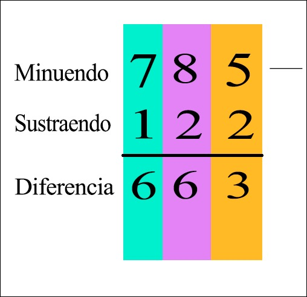

Las restas, conocidas como sustracciones, consisten en quitar una porción de una cantidad que ya tienes y calcular cuánto queda. Al resultado de la resta se le denomina diferencia.
La resta está compuesta por:
Minuendo: Es el número mayor, el que se coloca arriba y es el número que se va a restar
Sustraendo: Es el número menor, el que se coloca abajo. El sustraendo es el número que se le resta al minuendo
Diferencia: Que es el resultado final de la resta.
Signo: El signo de la resta se representa por una línea (-) y se llama menos
 Haga clic para más información